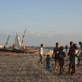
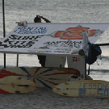
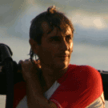

|

| Kto latem jezdzi do Brazylii? |
| Jak tam dotrzec? |
| Jericoacoara |
| Baza |
| Wiatr |
| Spot |
| Zdrowie |
| Jedzenie i wrazenia |
| Co poza windurfingiem? |
| Statystyki |
Wyczytaliśmy, że w Jeri jest jedna duża profesjonalna i godna polecenia baza Clube dos Ventos (inaczej Vela windsurfing). I właśnie od niej zaczęliśmy próby zarezerwowania sprzętu.
Weszliśmy na stronę, wypełniliśmy formularz zapytania i nic. Po jakiś 4 dniach wysłałam maila i wreszcie po tygodniu dostałam odpowiedź, że nie dysponują wolnym sprzętem, ale mogę go zarezerwować, przez lokalnego touroperatora. Podałam skąd jestem i po kolejnym tygodniu dostałam odpowiedź, że nie maja przedstawiciela w Polsce, ale jeśli zarezerwuję przez nich hotel, to mogą mi także zarezerwować sprzęt.
Poprosiłam wiec, o ceny i po kolejnym tygodniu dostałam odpowiedź, że już maja przedstawiciela w Polsce i ze jest to Surfing guide.
Ponieważ w międzyczasie znudził mi się ich powolny profesjonalizm i odpowiadanie na maile z częstotliwością raz na tydzień, to pomimo wyczytanych opinii, że to jedyna porządna baza w Jeri napisałam do znalezionej w internecie Gaia Windsurfing. Odpowiedział mi prowadzący Alvaro Zabala a kontakt był znakomity.Konkretne, szybkie odpowiedzi, miły kontakt. Postanowiliśmy zaryzykować i zamówiliśmy sprzęt w Gaii.
Baza jest niewielka. Dysponują ok 20 deskami kategorii SMALL 70-90 litrów. Mają deski Tabou (Pocket Wave, 3S, Freestyle) i żagle Simmer. Desek było po kilka z każdej wielkości, były także modele z poprzednich lat, ale wszystkie były w dobrym stanie, chociaż najbardziej chodliwe 84 l były trochę śliskie. Poza Tabou było tez kilka innych; Fanatic Freewave 72l, Poison 91 l - bardzo przyjemna deska Freestyle-wave, JP i jakiś custom 70l produkcji australijskiej wykonany z drewna.
Żagle w dobrym stanie, w całości wykonane z xplay’a, taklowane na masztach RDM – Powerex.
W zaniesieniu i odniesieni sprzętu pomagają lokalne chłopaki: Tchibu – jednocześnie uprawiający capoierę i Tiago.
Poza Gaią jest też kilka innych małych wypożyczalni. Sprzęt jest wszędzie w dobrym stanie, nowy, a atmosfera bardzo przyjemna, obsługa przemiła i bardzo się stara. Tak więc nie żałowaliśmy naszej decyzji.
W sierpniu jest spory ruch, głównie z powodu wakacji w Europie, ale z miejscami nie ma problemu. Szczyt sezonu to grudzień, a na nowy rok nie da się wcisnąć szpilki.
Po 23 sierpnia z dnia na dzień ubywało ludzi i widać było, że nadchodzący wrzesień to spokojny okres. Clube dos Ventos daje wówczas zniżki na wypożyczenie sprzętu, które jest dosyć drogie, choć nie tak horrendalne jak np. w Rene Egli na Fuercie.
Plaża |
Surf i sandsurfing |
|  |
Alvaro |
|  |